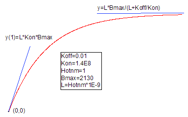

Assoc1conc-FitFunc
リガンドの会合速度定数を求めるために使用する放射性リガンド結合モデル。

パラメータ数: 4
パラメータ名: Koff, Kon, Hotnm, Bmax
意味: Koff = 解離速度定数、Kon = 会合速度定数、Hotnm = 放射性リガンド濃度（nM）、Bmax = 最大結合容量
下側境界: なし
上側境界: なし
nM_to_M=1e-09
nlf_Assoc1conc(x,Koff,Kon,Hotnm,Bmax)
Assoc1conc.fdf
Binding
x}\right)")